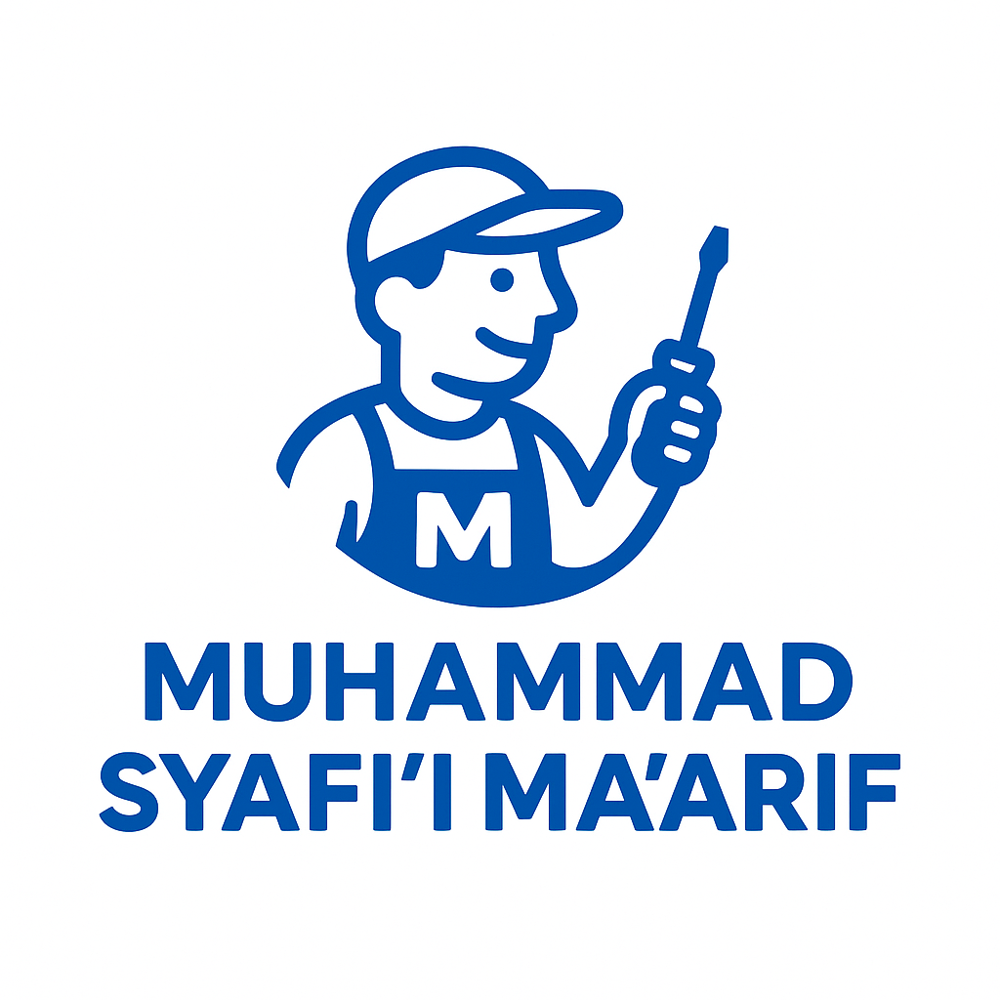
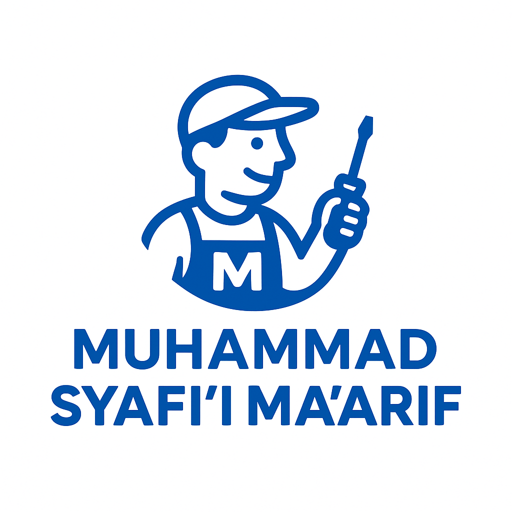

Selamat datang
Kami menyediakan layanan servis printer & komputer untuk rumah dan kantor di Hulu Sungai Selatan, termasuk instalasi, perbaikan, dan perawatan berkala.
Catatan: Untuk printer HP, saat ini layanan kami menerima sedikit keluhan dan jam terbang masih berkembang — namun tetap siap bantu dengan profesional.
Tentang Saya
Saya adalah teknisi printer & komputer dengan pengalaman 1,3 tahun. Saya mengutamakan layanan yang cepat, transparan, dan ramah. Saya melayani perbaikan di lokasi, cek diagnosa, ganti sparepart, dan maintenance berkala.
Alamat: Jalan Tawia RT 01 RW 01 No 66, Kec. Angkinang, Hulu Sungai Selatan — 71291
Layanan Utama
- Perbaikan & perawatan printer (Canon, Epson, HP, Brother)
- Reset & maintenance printer
- Instalasi driver & troubleshooting komputer / laptop
- Cleaning printhead, penggantian ink, & pemeriksaan hardware
Jika butuh layanan lain, hubungi WA untuk konsultasi cepat.
Galeri Hasil Servis
 

Foto contoh; kamu bisa mengganti gambar ini nanti dengan foto pekerjaan nyata (unggah ke repo dan ganti nama file).
Testimoni
Rizal - Banjarmasin
"Servis cepat dan rapi — printer saya kembali normal. Harga terjangkau."
Siti - Kandangan
"Pelayanan ramah dan informatif. Direkomendasikan!"
Andi - Amuntai
"Berkualitas dan profesional. Bisa datang ke rumah."
Kontak & Alamat
WhatsApp: 0878-4174-4895
Alamat: Jalan Tawia RT 01 RW 01 No 66, Kec. Angkinang, Hulu Sungai Selatan, Kode Pos 71291